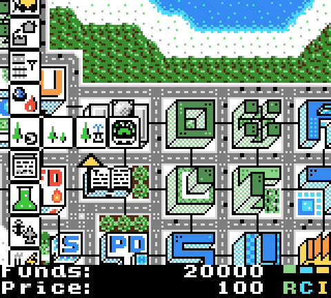

Hello again!
It's a bit late to publish this, but hey, it only comes 7 months late! I had no website to upload this to, anyway...
In any case, here it is, µCity, the open-source city-building game for Game Boy Color! It can also be spelled 'uCity', but it's pronounced 'micro-city'.
This game is completely free, licensed under the GPLv3+. Just download the ROM, install a Game Boy Color emulator, and play! The last release of the game should be here:
https://github.com/AntonioND/ucity/releases
You can also play on real hardware. Even though the game has been developed using mainly emulators, it has been verified to work on hardware. The game detects how much available space there is and adjust the maximum number of saved cities accordingly.
Here's a video, in case you are too lazy to test the ROM. If needed, there is a short manual with instructions for the player in the file manual.rst.
I've been asked quite a few times about this, so I might as well clarify it. A direct port of this game to the monochrome Game Boy isn't possible. This game uses most of the extra RAM that was added to the Game Boy Color, which isn't available in a regular Game Boy. While the Game Boy Color has 32 KiB of WRAM, the Game Boy only has 8 KB, and this game currently uses 30 KB more or less. Only a really limited version of this game with a much smaller map and much fewer features would fit in a Game Boy.
Oh, and this game has its own article in Hackaday!
https://hackaday.com/2017/06/20/writing-a-new-game-for-the-game-boy-color/
If you want to actually take a look at it, the source code is available here. An open-source project is a lot worse without documentation, though! That's why the code has a lot of comments and why there is a highly detailed documentation in the docs folder. And also because assembly code without comments can't be understood even by the developer who wrote it originally. :) To compile it, you'll just need RGBDS. It should be possible to compile the game on Linux, MinGW, Cygwin, etc.
Other tools used to create the game are:
- Open ModPlug Tracker: This is just a program to edit tracker style music. It has been used to compose the music used by GBT Player, my music player library. It can be found here.
- GBTD (Game Boy Tile Designer) and GBMB (Game Boy Map Builder): Graphics edition tools (for Windows, but they run on Wine).
Thanks to:
- beware: For the emulator BGB (http://bgb.bircd.org/), extremely useful tool used to develop this game.
- Pan of Anthrox, Marat Fayzullin, Pascal Felber, Paul Robson, Martin Korth (nocash) and kOOPa for the pandocs.
- Otaku No Zoku (Justin Lloyd) for the Gameboy Crib Sheet.
- Everyone that has contributed to develop RGBDS over the years, specially Carsten Sorensen, Justin Lloyd, Vegard Nossum and Anthony J. Bentley.
PS: If the name of the game breaks your website, fix your website. :P